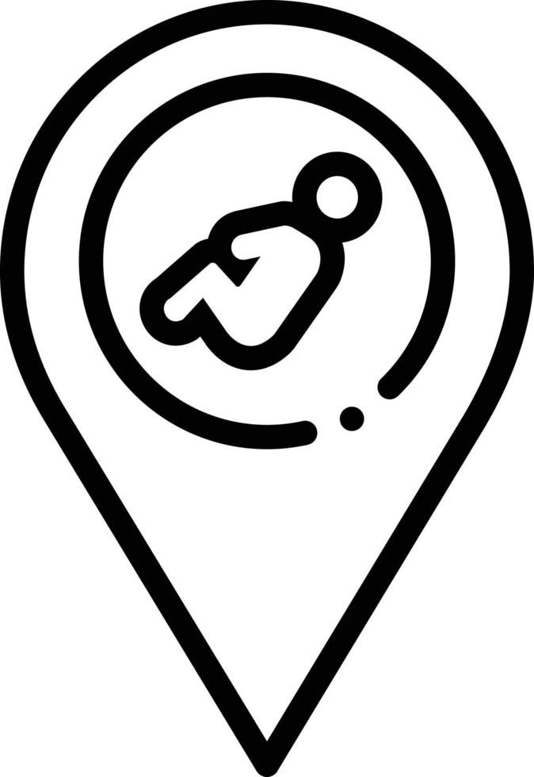
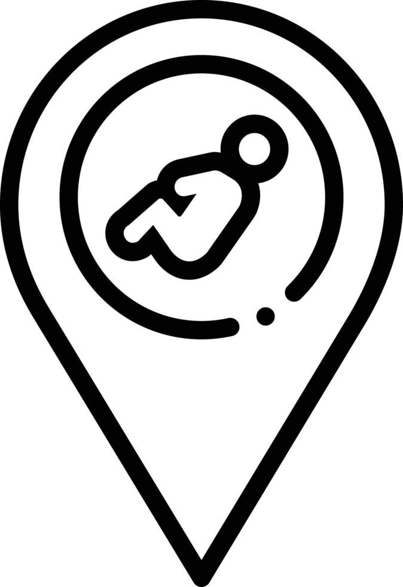

Estudio en el Colegio "Emilio Hochmann A"
Estudia Sistemas Operativos en el "TECBA"
 Vive en la Ciudad Sucre, Chuquisaca, Bolivia
Vive en la Ciudad Sucre, Chuquisaca, Bolivia
 Nacio el " 16 de Abril, Ciudad Sucre, Bolivia"
Estudio en el Colegio "Emilio Hochmann A"
Estudia Sistemas Operativos en el "TECBA"
 Vive en la Ciudad Sucre, Chuquisaca, Bolivia
Vive en la Ciudad Sucre, Chuquisaca, Bolivia
 Nacio el " 16 de Abril, Ciudad Sucre, Bolivia"
Soy Armando, un estudiante de Sistemas Informaticos en el TECBA "Tecnologico Boliviano Aleman" de la Ciudad de Sucre-Bolivia. Desde niño, me fascinó las computadoras y su gran catalogo de juegos. Desde entonces mi interes en el mundo de la programación y la creación de videojuegos crecio con el tiempo. Por rasones familiares no pude adentrarme en este mundo despues de graduarme del Colegio. Actualmente tengo la posibilidad de volver adentrarme a este mundo de programacion. Mi objetivo es convertirme en un desarrollador de software y ciberseguridad.

Algunas Redes Sociales que uso:
TikTok: TikTok es súper divertido y adictivo. Me gusta mucho ver videos cortos y creativos, desde bailes y retos hasta tutoriales y comedia. Es una forma genial de pasar el rato y descubrir nuevos talentos.


YouTube: YouTube es mi plataforma de aprendizaje favorita. Puedo encontrar tutoriales sobre cualquier cosa que quiera aprender, desde cocinar hasta tocar un instrumento. Además, me encanta ver vlogs de mis creadores de contenido favoritos y descubrir nuevos canales.

Facebook: Facebook es una red social más personal donde puedo mantenerme conectado con mis amigos y familiares. Me gusta compartir fotos y noticias, y participar en grupos de discusión sobre temas que me interesan.
Twitter: Twitter es como tener conversaciones en tiempo real con personas de todo el mundo. Me gusta seguir a periodistas, políticos y celebridades, y participar en debates sobre temas actuales.
Whatsapp: Esta es otra red social muy buena ya que nos sirve para comunicaerlo mediante mensajes o llamadas y tambien poder enviar audios ,fotos ,videos ,archivos etc.
Pueden visitar una de mis redes sociales Facebook, o encontrarme por mi nombre completo.
facebook